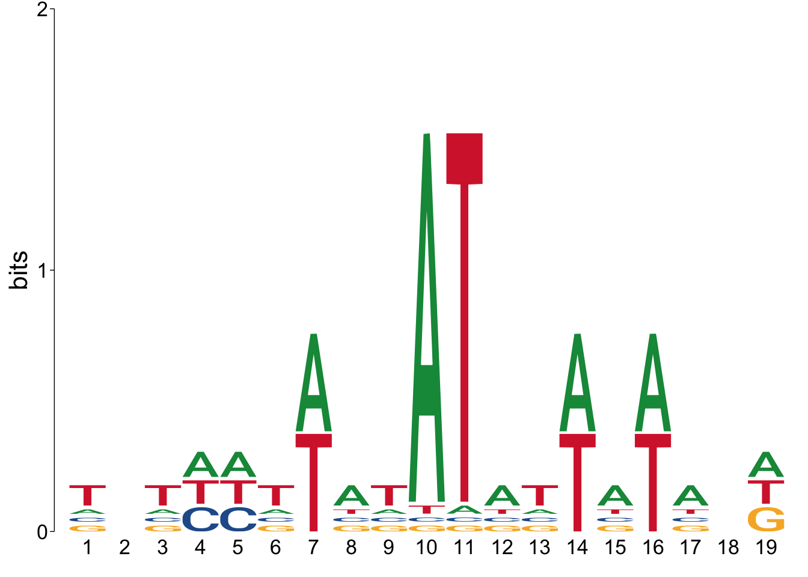
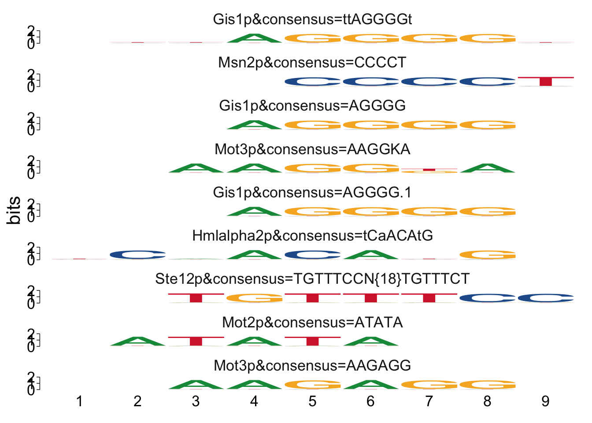
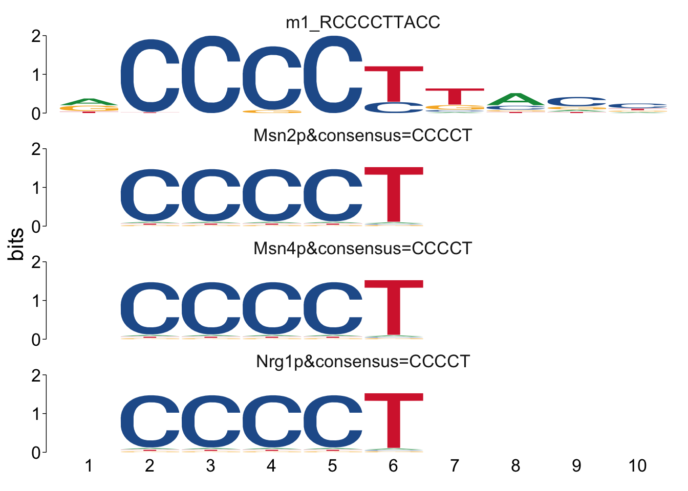
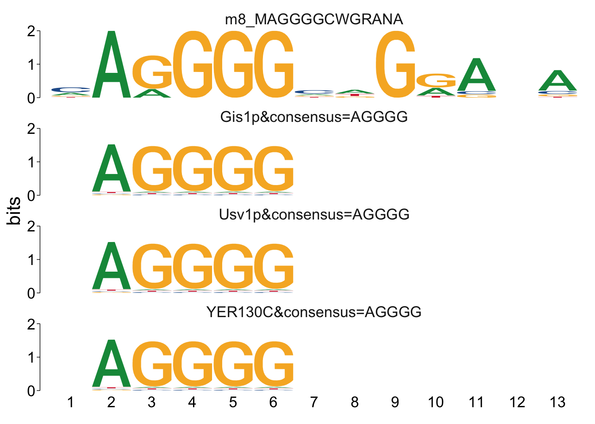
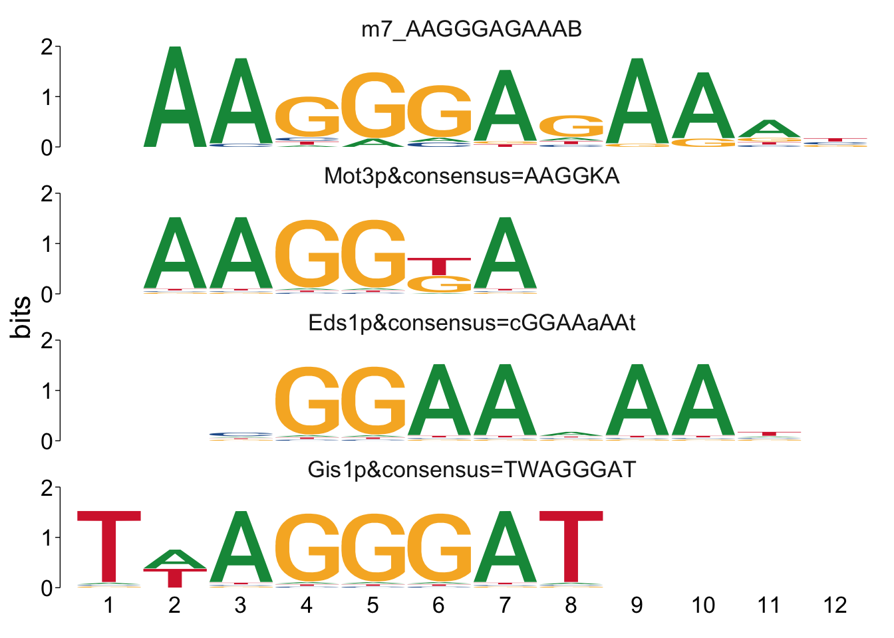
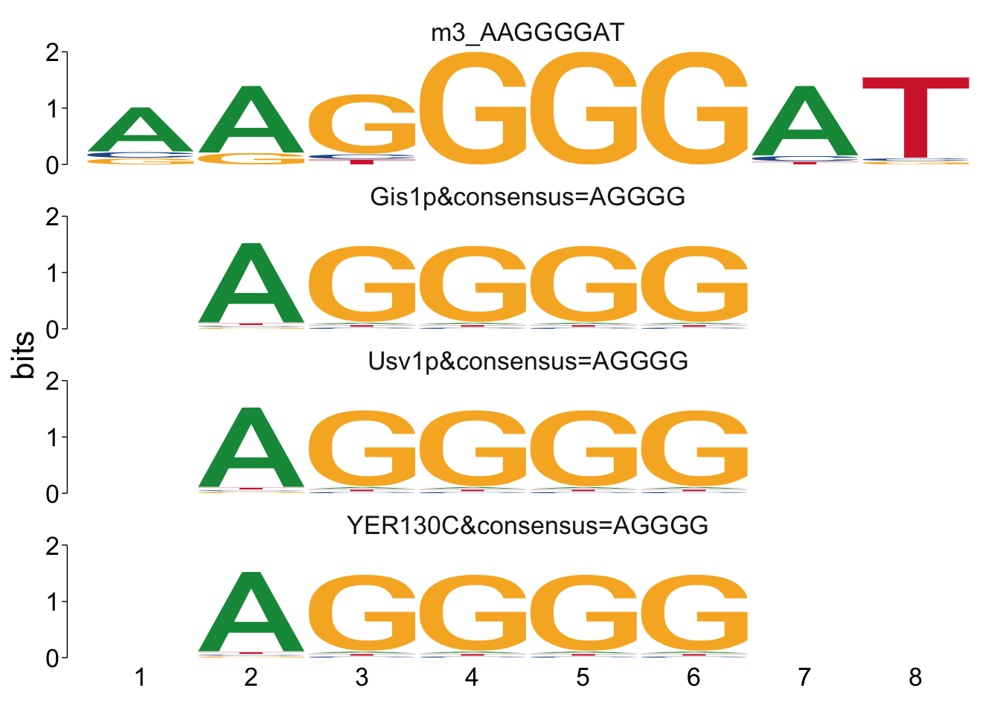
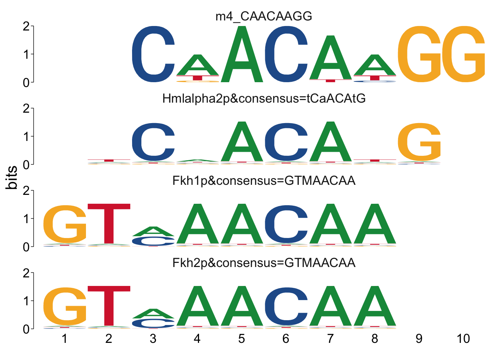
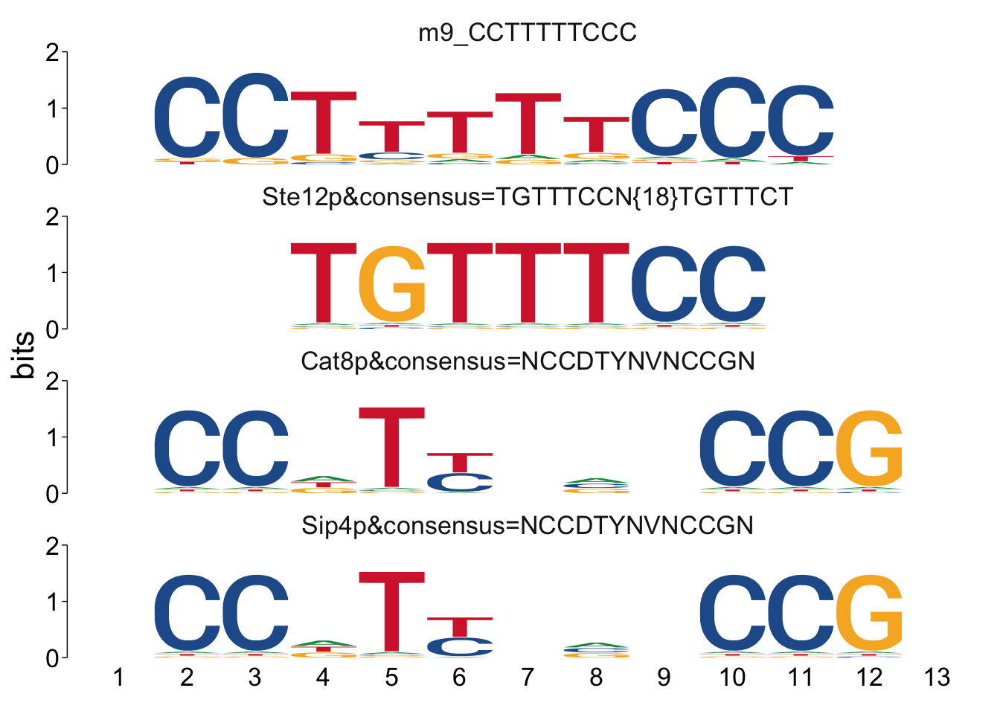
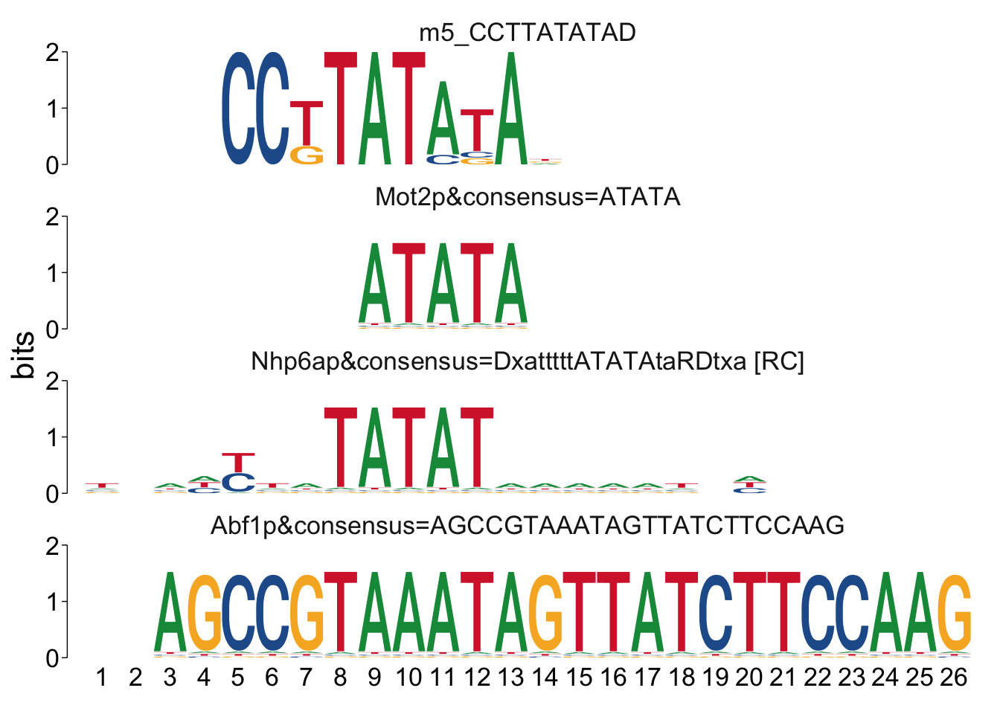
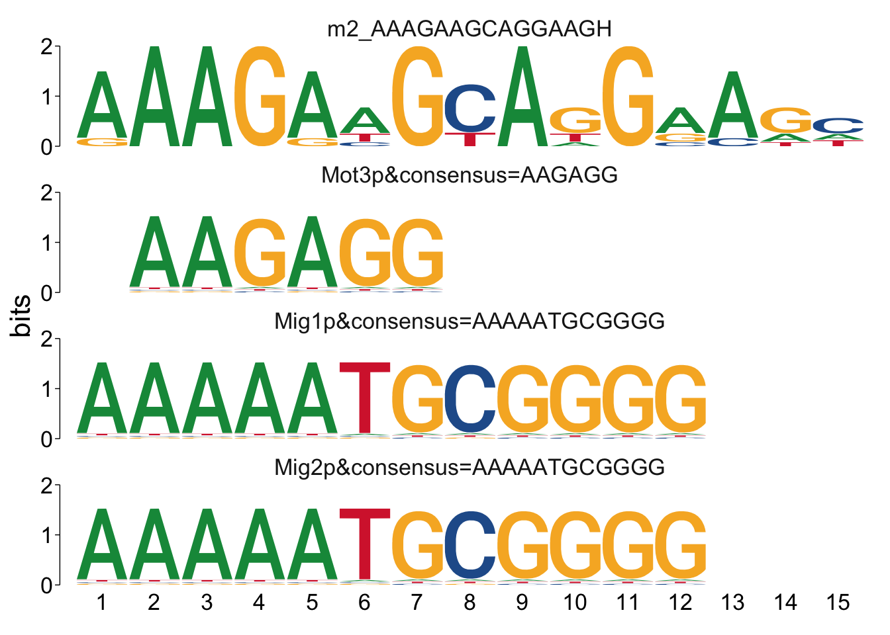

Chapter 12 Motif Analysis: MEME Suite
last updated: 2023-10-27
12.1 Description
In this class exercise, we will explore the use of the MEME suite for motif analysis.
In this exercise, we will learn to perform motif analysis using the MEME suite in R, covering tasks such as upstream sequence retrieval, motif identification, and comparison with external motif databases. Working with real yeast stress response data, we will gain proficiency in utilizing bioinformatics tools, and interpreting motif analysis results.
12.2 Learning Objectives
At the end of this exercise, you should be able to:
- Bioinformatics Libraries: load and utilize key bioinformatics libraries such as biomaRt, memes, and Biostrings.
- Data Retrieval: Retrieve upstream DNA sequences for specific
genes from the Ensembl database using
biomaRt. - Motif Analysis:
- Perform motif analysis using the MEME suite tools (
runMemeandrunStreme) - Interpret results from motif analysis, including motif width and significance
- Perform motif analysis using the MEME suite tools (
- TomTom Analysis: Use TomTom to compare identified motifs with known motifs in databases & interpret results
Install Packages
# Ensure required packages are installed
if (!require("pacman")) install.packages("pacman"); library(pacman)
# Load necessary packages
p_load("tidyverse", "knitr", "readr", "pander", "BiocManager",
"dplyr", "stringr", "data.table",
"biomaRt", "memes", "Biostrings", "curl", "universalmotif")
library(biomaRt)
library(memes)
library(curl)
library(universalmotif)12.3 Install MEME suite
You will need to install MEME software on your computer if you don’t already have it.
The code below downloads & installs the software for MacOS, if it not on your computer. The output when installing is VERY long, you can close the output by clicking the small x in the top right corner of the output box.
The MEME suite does not currently support Windows OS, although it can be done with WSL. We will be using Mac for this analysis.
# Check for XCode on Mac or prompt installation
xcode-select --install
cd ~
# Define MEME version
# Latest version as of 23 Oct 2023,
version="5.5.4"
# Install MEME if not already installed
if ! command -v $HOME/meme/bin/meme &> /dev/null; then
curl -o $HOME/meme-$version.tar.gz https://meme-suite.org/meme/meme-software/$version/meme-$version.tar.gz
tar zxf meme-$version.tar.gz
cd meme-$version
./configure --prefix=$HOME/meme --with-url=http://meme-suite.org/ --enable-build-libxml2 --enable-build-libxslt
make
make test
make install
fi12.3.1 Verify MEME Installation
## checking main install## ✔ /Users/clstacy/meme/bin
## checking util installs
##
## ✔ /Users/clstacy/meme/bin/dreme
## ✔ /Users/clstacy/meme/bin/ame
## ✔ /Users/clstacy/meme/bin/fimo
## ✔ /Users/clstacy/meme/bin/tomtom
## ✔ /Users/clstacy/meme/bin/meme
## ✔ /Users/clstacy/meme/bin/stremeIf install didn’t work, troubleshooting is needed.
12.4 Analysis: Motif Discovery for msn2/4∆∆ vs WT Response to EtOH
12.4.1 Retrieve LogFC and FDR values
Let’s load in the DE_yeast_TF_stress.txt file containing logFC and FDR
values for a variety of yeast strains and stress conditions.
# Load gene file used in clustering
FC_list <- data.table::fread(
"https://github.com/clstacy/GenomicDataAnalysis_Fa23/raw/main/data/DE_yeast_TF_stress.txt.gz") |>
as_tibble(.name_repair = "universal"
)## New names:
## • `logFC: WT NaCl response` -> `logFC..WT.NaCl.response`
## • `FDR: WT NaCl response` -> `FDR..WT.NaCl.response`
## • `logFC: msn24 mutant NaCl response` -> `logFC..msn24.mutant.NaCl.response`
## • `FDR: msn24 mutant NaCl response` -> `FDR..msn24.mutant.NaCl.response`
## • `logFC: yap1 mutant NaCl response` -> `logFC..yap1.mutant.NaCl.response`
## • `FDR: yap1 mutant NaCl response` -> `FDR..yap1.mutant.NaCl.response`
## • `logFC: skn7 mutant NaCl response` -> `logFC..skn7.mutant.NaCl.response`
## • `FDR: skn7 mutant NaCl response` -> `FDR..skn7.mutant.NaCl.response`
## • `logFC: WT EtOH response` -> `logFC..WT.EtOH.response`
## • `FDR: WT EtOH response` -> `FDR..WT.EtOH.response`
## • `logFC: msn24 mutant EtOH response` -> `logFC...msn24.mutant.EtOH.response`
## • `FDR: msn24 mutan EtOH response` -> `FDR...msn24.mutan..EtOH.response`
## • `logFC: yap1 mutant EtOH response` -> `logFC...yap1.mutant.EtOH.response`
## • `FDR: yap1 mutant EtOH response` -> `FDR...yap1.mutant.EtOH.response`
## • `logFC: skn7 mutant EtOH response` -> `logFC...skn7.mutant.EtOH.response`
## • `FDR: skn7 mutant EtOH response` -> `FDR...skn7.mutant.EtOH.response`
## • `logFC: WT v msn24 mutant: NaCl response` ->
## `logFC..WT.v.msn24.mutant..NaCl.response`
## • `FDR: WT v msn24 mutant: NaCl response` ->
## `FDR..WT.v.msn24.mutant..NaCl.response`
## • `logFC: WT v yap1 mutant: NaCl response` ->
## `logFC..WT.v.yap1.mutant..NaCl.response`
## • `FDR: WT v yap1 mutant: NaCl response` ->
## `FDR..WT.v.yap1.mutant..NaCl.response`
## • `logFC: WT v skn7 mutant: NaCl response` ->
## `logFC..WT.v.skn7.mutant..NaCl.response`
## • `FDR: WT v skn7 mutant NaCl response` ->
## `FDR..WT.v.skn7.mutant.NaCl.response`
## • `logFC: WT v msn24 mutant: EtOH response` ->
## `logFC..WT.v.msn24.mutant..EtOH.response`
## • `FDR: WT v msn24 mutant: EtOH response` ->
## `FDR..WT.v.msn24.mutant..EtOH.response`
## • `logFC: WT v yap1 mutant: EtOH response` ->
## `logFC..WT.v.yap1.mutant..EtOH.response`
## • `FDR: WT v yap1 mutant: EtOH response` ->
## `FDR..WT.v.yap1.mutant..EtOH.response`
## • `logFC: WT v skn7 mutant: EtOH response` ->
## `logFC..WT.v.skn7.mutant..EtOH.response`
## • `FDR: WT v skn7 mutant: EtOH response` ->
## `FDR..WT.v.skn7.mutant..EtOH.response`12.4.2 Selecting an Ensembl BioMart database and dataset
## Object of class 'Mart':
## Using the ENSEMBL_MART_ENSEMBL BioMart database
## No dataset selected.Not we have loaded the “gene” database, but haven’t selected a dataset yet. Let’s find the one we want:
## dataset description version
## 173 scerevisiae_gene_ensembl Saccharomyces cerevisiae genes (R64-1-1) R64-1-1So the dataset needs to be “scerevisiae_gene_ensembl” for yeast. Can you find it for your organism?
12.4.3 Retrieve Upstream Sequences
# Retrieve the ORF IDs included in the dataset
ORFs_in_analysis = FC_list$ID
# Get the upstream sequences for each gene and save in data.frame
seq <- getSequence(id = ORFs_in_analysis,
type="ensembl_gene_id",
seqType="coding_gene_flank",
upstream=500,
mart=ensembl,
useCache = TRUE)
# Filter out rows with no sequence found
seq <- seq |> filter(coding_gene_flank != "Sequence unavailable")
# Display obtained sequences
glimpse(seq)## Rows: 5,717
## Columns: 2
## $ coding_gene_flank <chr> "AATTGAATCTCATTTGTGCATTCTCCACGCTACTTCTAGCAATTTCCGCCT…
## $ ensembl_gene_id <chr> "YBL091C", "YAL033W", "YAL064W", "YBL066C", "YBL089W…Now we have the 500bp upstream sequences for (almost) all of the genes in the genome. Note that for yeast, this isn’t too much data for a laptop. If you’re working with a larger genome, you might need to subset the gene list down just to the genes in your gene list.
12.5 Motif Analysis for Genes Downregulated in EtOH Response
In order to continue, we need a list of genes.
What gene list do you think has the most interesting biological meaning for motif analysis? One comparison to consider is the genes that are most different in the EtOH response between WT and msn2/4∆∆ samples. Let’s get that list of genes with large magnitude and statistically significant negative logFC values now:
# Create gene list for downregulated genes
msn24_EtOH_down <- FC_list |>
dplyr::filter(logFC..WT.v.msn24.mutant..EtOH.response < -2) |>
dplyr::filter(FDR..WT.v.msn24.mutant..EtOH.response<0.01) |>
dplyr::select(ID) %>%
# add the upstream sequences as a new column
left_join(seq, by=c("ID" = "ensembl_gene_id")) |>
drop_na("coding_gene_flank")
# Glimpse at the genes identified.
glimpse(msn24_EtOH_down)## Rows: 107
## Columns: 2
## $ ID <chr> "YAL061W", "YBL015W", "YBL049W", "YBL064C", "YBR054W…
## $ coding_gene_flank <chr> "CGCTATTTTCTTTTTGTTCGTAACTATCTGTGTATGTAGTAGTGTAATCTA…For MEME analysis, the gene list needs to be formatted like a fasta file. Here is how we can do that:
# create Biostrings object
msn24_EtOH_down_fa <- Biostrings::DNAStringSet(msn24_EtOH_down$coding_gene_flank)
# Add gene names
names(msn24_EtOH_down_fa) <- msn24_EtOH_down$IDLet’s create a folder to which we can save output files.
# Choose output directory for the output files to be saved
out_dir <- path.expand("~/Desktop/Genomic_Data_Analysis/Analysis/memes/")
# Create out_dir directory if doesn't already exist
if (!dir.exists(out_dir)) {
dir.create(out_dir, recursive = TRUE)
}12.5.1 Run Meme enrichment
This was the first algorithm developed in the MEME-suite, and is still widely used. However, it is not always the best approach. MEME is recommended when you have fewer than 50 sequences, while STREME is recommended when you have more. Also, the default parameter settings are often not the best options depending on your organism (e.g, bacteria tend to have longer motifs). We can adjust these settings in class to parameters better suited to our data (based on biological domain knowledge). See all of the parameter options at: https://meme-suite.org/meme/doc/meme.html
# Run Meme
meme_msn24_EtOH_down <- runMeme(msn24_EtOH_down_fa,
minw = 8, # default is 8, for yeast I use 5
maxw= 50, #default is 50, for yeast I use 20
mod= "zoops", #zero or one occurence per sequence
parse_genomic_coord=FALSE,
silent=F,
outdir = path.expand(paste0(out_dir, "meme_msn24_EtOH_down"))
)## ## motif name altname consensus alphabet
## 1 <mot:TTYT..> TTYTTTTWYTTTTTTYTTBTT MEME-1 YYYTTTTWYTTTYTTYNTYTT DNA
## strand icscore nsites eval type pseudocount bkg width
## 1 + 17.79857 64 1.4e-61 PPM 1 0.311, 0.... 21
## sites_hits
## 1 c("YOR34....
##
## [Hidden empty columns: family, organism, bkgsites, pval, qval.]12.5.2 Run STEME enrichment
STEME is a newer MEME suite tool, that is better suited to looking for shorter motifs which are common in Eukaryotes.
For runStreme, properly setting the control parameter is key to
discovering biologically relevant motifs. Often, using
control = "shuffle" will produce a suboptimal set of motifs; however,
some discriminative analysis designs don’t have proper “control” regions
other than to shuffle.
For our analysis, we can use the promoter sequences from the entire
genome as a background to model the null distribution, let’s create an
object in R with all of the 500bp upstream sequences from seq to use
as a control.
# create a DNAStringSet object from our FC_list we created above.
background_fa <- DNAStringSet(left_join(FC_list,seq, by=c("ID" = "ensembl_gene_id")) |>
drop_na("coding_gene_flank") |> pull(coding_gene_flank))
# add gene names
names(background_fa) <- left_join(FC_list,seq, by=c("ID" = "ensembl_gene_id")) |>
drop_na("coding_gene_flank") |> pull(ID)# Run Streme
streme_msn24_EtOH_down <- runStreme(msn24_EtOH_down_fa,
control= background_fa,
minw = 8, # default is 8, for yeast I use 5
maxw= 15, #default is 15, for yeast i use 20
parse_genomic_coord=FALSE,
silent=TRUE,
outdir = path.expand(paste0(out_dir, "streme_msn24_EtOH_down"))
)
# Display Streme results
streme_msn24_EtOH_down## motif name altname consensus
## m1_RCCCCTTACC <mot:m1_R..> m1_RCCCCTTACC STREME-1 RCCCCTTACC
## m2_AAAGAAGCAGGAAGH <mot:m2_A..> m2_AAAGAAGCAGGAAGH STREME-2 AAAGAWGYAKGRAGH
## m3_AAGGGGAT <mot:m3_A..> m3_AAGGGGAT STREME-3 AAGGGGAT
## m4_CAACAAGG <mot:m4_C..> m4_CAACAAGG STREME-4 CAACAAGG
## m5_CCTTATATAD <mot:m5_C..> m5_CCTTATATAD STREME-5 CCKTATATAN
## m6_AYAGGGGT <mot:m6_A..> m6_AYAGGGGT STREME-6 AYAGGGGT
## m7_AAGGGAGAAAB <mot:m7_A..> m7_AAGGGAGAAAB STREME-7 AAGGGAGAAAN
## m8_MAGGGGCWGRANA <mot:m8_M..> m8_MAGGGGCWGRANA STREME-8 MAGGGGCWGRANA
## m9_CCTTTTTCCC <mot:m9_C..> m9_CCTTTTTCCC STREME-9 CCTTTTTCCC
## alphabet strand icscore nsites pval type pseudocount
## m1_RCCCCTTACC DNA +- 11.03072 84 7.9e-06 PCM 0
## m2_AAAGAAGCAGGAAGH DNA +- 21.39292 9 1.7e-02 PCM 0
## m3_AAGGGGAT DNA +- 12.59474 27 2.1e-02 PCM 0
## m4_CAACAAGG DNA +- 13.63451 16 3.9e-02 PCM 0
## m5_CCTTATATAD DNA +- 15.67707 17 4.3e-02 PCM 0
## m6_AYAGGGGT DNA +- 11.95501 21 4.7e-02 PCM 0
## m7_AAGGGAGAAAB DNA +- 13.59987 26 1.2e-01 PCM 0
## m8_MAGGGGCWGRANA DNA +- 14.77500 24 1.0e+00 PCM 0
## m9_CCTTTTTCCC DNA +- 12.59822 28 1.0e+00 PCM 0
## bkg width initial_width seed
## m1_RCCCCTTACC 0.315, 0.... 10 9 ACCCCTTACC
## m2_AAAGAAGCAGGAAGH 0.315, 0.... 15 12 AAAGAAGCAGGAAGC
## m3_AAGGGGAT 0.315, 0.... 8 8 AAGGGGAT
## m4_CAACAAGG 0.315, 0.... 8 8 CAACAAGG
## m5_CCTTATATAD 0.315, 0.... 10 9 CCTTATATAG
## m6_AYAGGGGT 0.315, 0.... 8 6 ACAGGGGT
## m7_AAGGGAGAAAB 0.315, 0.... 11 7 AAGGGAGAAAT
## m8_MAGGGGCWGRANA 0.315, 0.... 13 7 CAGGGGCAGGACA
## m9_CCTTTTTCCC 0.315, 0.... 10 10 CCTTTTTCCC
## score_threshold pos_count neg_count log_pval log_evalue
## m1_RCCCCTTACC 9.70716 8 81 -5.10131 -4.14707
## m2_AAAGAAGCAGGAAGH 17.469 1 0 -1.76418 -0.809934
## m3_AAGGGGAT 11.0408 3 34 -1.67894 -0.724701
## m4_CAACAAGG 13.4256 2 17 -1.40874 -0.4545
## m5_CCTTATATAD 13.0759 2 18 -1.36701 -0.412767
## m6_AYAGGGGT 11.4254 2 19 -1.32757 -0.373326
## m7_AAGGGAGAAAB 12.0575 2 33 -0.93161 0.0226326
## m8_MAGGGGCWGRANA 14.0348 0 8 0 0.954243
## m9_CCTTTTTCCC 11.8246 0 31 0 0.954243
## evalue dtc bernoulli train_pos_count train_neg_count
## m1_RCCCCTTACC 7.1e-005 -1 -1 76 857
## m2_AAAGAAGCAGGAAGH 1.5e-001 -1 -1 8 17
## m3_AAGGGGAT 1.9e-001 -1 -1 24 300
## m4_CAACAAGG 3.5e-001 -1 -1 14 179
## m5_CCTTATATAD 3.9e-001 -1 -1 15 153
## m6_AYAGGGGT 4.2e-001 -1 -1 19 234
## m7_AAGGGAGAAAB 1.1e+000 -1 -1 24 254
## m8_MAGGGGCWGRANA 9.0e+000 -1 -1 24 76
## m9_CCTTTTTCCC 9.0e+000 -1 -1 28 227
## train_log_pval train_pval train_dtc train_bernoulli npassing
## m1_RCCCCTTACC -38.7377 1.8e-39 -1 -1 1022
## m2_AAAGAAGCAGGAAGH -8.06722 8.6e-09 -1 -1 26
## m3_AAGGGGAT -8.63793 2.3e-09 -1 -1 361
## m4_CAACAAGG -5.00297 9.9e-06 -1 -1 212
## m5_CCTTATATAD -6.48842 3.2e-07 -1 -1 188
## m6_AYAGGGGT -6.93183 1.2e-07 -1 -1 274
## m7_AAGGGAGAAAB -10.0161 9.6e-11 -1 -1 313
## m8_MAGGGGCWGRANA -20.4613 3.5e-21 -1 -1 108
## m9_CCTTTTTCCC -14.4287 3.7e-15 -1 -1 286
## is_palindromic elapsed_time total_sites
## m1_RCCCCTTACC no 12.1 76
## m2_AAAGAAGCAGGAAGH no 64.3 8
## m3_AAGGGGAT no 44.1 24
## m4_CAACAAGG no 130 14
## m5_CCTTATATAD no 81.1 15
## m6_AYAGGGGT no 114.5 19
## m7_AAGGGAGAAAB no 146.8 24
## m8_MAGGGGCWGRANA no 28.4 24
## m9_CCTTTTTCCC no 98.5 28
## site_distr
## m1_RCCCCTTACC 0 0 1 0 0 0 0 0 0 0 0 0 0 0 0 0 0 0 1 0 1 0 0 0 0 0 0 1 0 1 0 0 1 1 0 1 0 0 0 0 0 0 0 1 0 0 0 0 0 0 0 0 0 0 0 0 0 1 0 0 0 1 1 1 0 0 0 0 1 0 0 0 0 0 0 0 0 1 1 0 0 0 0 0 0 0 0 0 0 0 0 0 0 0 0 0 0 0 0 0 0 0 0 0 0 0 0 0 0 0 0 0 0 0 0 1 0 0 0 0 0 0 0 0 0 0 0 0 1 0 0 0 0 1 0 0 0 0 0 1 0 0 0 0 1 0 0 0 0 1 0 0 0 0 0 0 0 0 0 0 0 0 1 1 0 0 1 0 0 0 1 0 0 1 1 0 0 0 0 0 1 0 0 0 0 0 0 0 0 0 0 0 0 0 0 0 0 1 0 0 0 0 0 0 0 0 1 0 0 0 0 0 0 0 0 0 0 2 0 0 0 1 0 0 0 0 0 0 0 0 0 1 0 0 1 0 0 0 0 0 0 0 1 2 1 0 0 0 1 0 0 0 0 0 0 0 0 0 1 1 1 0 0 3 0 0 0 0 1 0 0 1 0 0 0 1 0 1 1 1 0 0 0 1 1 0 0 0 0 0 0 0 0 1 0 1 0 0 0 0 0 0 1 1 1 0 0 0 0 0 0 0 0 0 0 0 0 0 0 1 0 2 0 1 0 0 0 0 0 0 0 0 0 1 0 0 0 0 0 1 0 0 0 0 1 0 0 0 1 1 0 0 0 0 1 0 0 0 0 0 0 0 0 0 0 0 0 0 0 0 0 0 0 0 0 0 0 0 1 0 0 0 0 0 0 0 0 0 0 0 0 0 0 0 0 0 0 1 0 0 0 0 0 0 0 0 0 0 0 0 0 1 0 0 0 0 0 0 0 0 0 0 0 0 0 0 0 0 0 0 0 0 0 0 0 0 0 0 0 0 0 0 0 0 0 0 0 0 0 0 0 0 0 0 0 0 0 0 0 0 0 0 0 1 0 0 0 0 0 0 0 0 0 0 1 0 0 0 0 0 0 0 0 0 0 0 0 0 0 0 1
## m2_AAAGAAGCAGGAAGH 0 0 0 0 0 1 0 0 0 0 0 0 0 0 0 0 0 0 0 0 0 0 0 0 0 0 0 0 0 0 0 0 0 0 0 0 0 0 0 0 0 0 0 0 0 0 0 0 0 0 0 0 0 0 0 0 0 0 0 0 0 0 0 0 0 0 0 0 0 0 0 0 0 1 0 0 0 0 0 0 0 0 0 0 0 0 0 0 0 0 0 0 0 0 0 0 0 0 0 0 0 0 0 0 0 0 1 0 0 0 0 0 0 0 1 0 0 0 0 0 0 0 0 0 0 0 0 0 0 0 0 0 0 0 0 0 0 0 0 0 0 0 1 0 0 0 0 0 0 0 0 0 0 0 0 0 0 0 0 0 0 0 0 0 0 0 0 0 0 0 0 0 0 0 0 0 0 0 0 0 0 0 0 0 0 0 0 0 0 0 0 0 0 0 0 0 0 0 0 0 0 0 0 0 0 0 0 0 0 0 0 0 0 0 0 0 0 0 0 0 0 0 0 0 0 0 0 0 0 0 0 0 0 0 0 0 0 0 0 0 0 0 0 0 0 0 0 0 1 0 0 0 0 0 0 0 0 0 0 0 0 0 0 0 0 0 0 0 0 0 0 0 0 0 0 0 0 0 0 0 0 0 0 0 0 0 0 0 0 0 0 0 0 0 0 0 0 0 0 0 0 0 0 0 0 0 0 0 0 0 0 0 0 0 0 0 0 0 0 0 0 0 0 0 0 0 0 0 0 0 0 0 0 1 0 0 0 0 0 0 0 0 0 0 0 0 0 0 0 0 0 0 0 0 0 0 0 0 0 0 0 0 0 0 0 0 0 0 0 0 0 0 0 0 0 0 0 0 0 0 0 0 0 0 0 0 0 0 0 0 0 0 0 0 0 0 0 0 0 0 0 0 0 0 0 0 0 0 0 0 0 0 0 0 0 0 0 1 0 0 0 0 0 0 0 0 0 0 0 0 0 0 0 0 0 0 0 0 0 0 0 0 0 0 0 0 0 0 0 0 0 0 0 0 0 0 0 0 0 0 0 0 0 0 0 0 0 0 0 0 0 0 0 0 0 0 0 0 0 0 0 0 0 0 0 0
## m3_AAGGGGAT 1 0 0 0 0 0 1 0 0 0 0 0 0 0 0 0 0 0 0 0 0 0 0 0 0 0 0 0 1 0 0 0 0 0 0 0 0 0 0 0 0 0 0 0 0 0 0 0 0 0 0 0 0 0 0 0 0 0 0 0 0 0 0 0 0 0 0 0 0 0 0 0 0 0 0 0 0 0 0 0 0 0 0 0 0 0 0 0 0 0 0 0 0 0 0 0 0 0 0 0 0 0 0 0 0 1 0 0 0 0 0 0 0 0 0 0 0 0 0 0 0 1 0 0 0 1 0 0 0 0 0 0 0 0 0 0 0 0 1 0 0 0 0 0 0 1 0 0 0 0 0 0 0 0 0 0 1 0 0 0 0 0 0 1 0 0 0 0 0 0 0 0 0 0 0 0 0 0 1 0 0 0 0 1 0 0 0 0 0 1 0 0 0 0 0 0 0 0 0 0 1 0 0 0 0 0 0 0 0 1 0 0 0 0 0 0 0 0 0 0 0 0 0 0 0 0 0 0 0 0 0 0 0 0 0 0 0 0 1 0 0 0 1 0 0 0 0 0 0 0 0 0 0 0 0 1 0 0 0 0 0 0 0 0 0 0 0 0 0 0 0 0 0 0 0 0 0 0 0 0 0 0 0 0 1 0 0 0 0 0 0 0 0 0 0 0 0 0 0 0 0 0 1 0 0 0 0 0 1 0 0 0 0 0 0 0 0 0 0 0 0 0 0 0 0 0 0 0 0 0 0 0 0 0 0 0 0 0 1 0 0 0 0 0 0 0 0 0 0 0 0 0 1 0 0 0 0 0 0 0 0 0 0 0 0 0 0 0 0 1 0 0 0 0 0 0 0 0 0 0 0 0 0 0 0 0 0 0 0 0 0 0 0 0 0 0 0 0 0 0 0 0 0 0 0 0 0 0 0 0 0 0 0 0 0 0 0 0 0 0 0 0 0 0 0 0 0 0 0 0 0 0 0 0 0 0 0 0 0 0 0 0 0 0 0 0 0 0 0 0 0 0 0 0 0 0 0 0 0 0 0 0 0 0 0 0 0 0 0 0 0 0 0 0 0 0 0 0 0 0 0 0 0 0 0 0 0 0 0 0 0 0 0
## m4_CAACAAGG 0 0 2 0 0 0 0 0 0 0 0 0 0 0 0 0 0 0 0 0 0 0 0 0 0 0 0 0 0 0 0 0 0 0 0 0 0 0 0 0 0 0 0 1 0 0 0 0 0 0 0 0 0 1 0 0 0 0 0 0 0 0 0 0 0 0 0 0 0 0 0 0 0 0 0 0 0 0 0 0 0 0 0 0 0 0 0 0 1 0 1 0 0 0 0 0 0 0 0 0 0 0 0 0 0 0 0 0 0 0 0 0 0 0 0 0 0 0 0 0 0 0 0 0 0 0 0 0 0 0 0 0 0 0 0 0 0 0 0 0 0 0 0 0 0 0 1 0 0 0 0 0 0 0 1 0 0 0 0 0 0 0 0 0 0 0 0 0 0 0 0 0 0 0 0 0 0 0 0 0 0 0 0 0 0 0 0 1 0 0 0 1 0 0 0 0 0 0 0 0 0 0 0 0 0 0 0 0 0 0 0 0 0 0 0 0 0 0 0 0 0 0 0 0 0 0 0 0 0 0 0 0 0 0 0 0 0 0 0 0 0 0 0 0 0 0 0 0 0 0 0 0 0 0 0 0 0 0 0 0 0 0 0 0 0 0 0 0 0 0 0 1 0 0 0 0 0 0 0 0 0 0 0 0 0 0 0 0 0 0 0 0 0 0 0 0 0 0 0 0 0 0 0 0 0 0 0 0 0 0 0 0 0 0 0 0 0 0 0 0 0 0 0 0 0 0 0 0 0 0 0 0 0 0 1 0 0 0 0 0 0 0 0 0 1 0 0 0 0 0 0 0 0 0 0 0 0 0 0 0 0 0 0 0 0 0 0 0 0 0 0 0 0 0 0 0 0 0 0 0 1 0 0 0 0 0 0 0 0 0 0 0 0 0 0 0 0 0 0 0 0 0 0 0 0 0 0 0 0 0 0 0 0 0 0 0 0 0 0 0 0 0 0 0 0 0 0 0 0 0 0 0 0 0 0 0 0 0 0 0 0 0 0 0 0 0 0 0 0 0 0 0 0 0 0 0 0 0 0 0 0 0 0 0 0 0 0 0 0 0 0 0 0 0 0 0 0 0 0 0 0 0 0 0 0 0 0 0 0 0 0 0 0
## m5_CCTTATATAD 0 0 0 0 0 0 0 0 0 0 0 0 0 0 0 0 0 0 0 0 0 0 0 0 0 0 0 0 0 0 0 0 0 0 0 0 0 0 0 0 0 0 0 0 0 0 0 0 0 0 0 0 0 0 0 0 0 0 0 0 0 0 0 0 0 0 0 0 0 0 0 0 0 0 0 0 0 0 0 0 0 0 0 0 0 0 0 0 0 0 0 0 0 0 0 0 0 0 0 0 0 0 0 0 0 1 0 0 0 1 0 0 0 0 0 0 0 0 0 0 0 0 0 0 0 0 0 0 0 0 0 0 0 0 0 0 0 0 0 0 0 0 0 0 0 0 0 0 0 0 0 0 0 0 0 0 0 0 0 0 0 0 0 0 0 0 0 0 1 0 0 0 0 0 0 0 0 0 0 0 0 0 0 0 0 0 0 0 1 0 0 0 0 0 0 1 0 0 0 0 0 0 0 0 0 0 0 0 1 0 0 0 0 0 0 0 0 0 0 0 0 0 0 0 0 0 0 0 0 0 0 0 0 1 0 0 0 0 0 0 0 0 0 0 0 0 0 0 0 0 0 0 0 0 0 1 0 0 0 0 0 0 0 0 0 0 1 0 0 0 0 0 0 0 0 0 0 0 0 0 0 0 0 0 0 0 0 0 0 0 0 0 0 0 0 0 0 0 0 0 0 0 0 0 0 0 0 0 0 0 0 0 0 0 0 0 0 0 0 0 0 0 0 0 0 0 0 0 0 0 0 0 0 0 1 0 0 0 0 0 0 0 0 0 0 0 0 0 0 0 0 0 0 0 0 0 0 1 0 0 1 0 0 0 0 0 0 0 0 0 0 0 0 0 0 0 0 0 0 0 0 0 0 0 0 0 0 0 0 0 0 0 0 0 0 1 0 0 0 0 0 0 0 0 0 0 0 0 0 0 1 0 0 0 0 0 0 0 0 0 0 0 0 0 0 0 0 0 0 0 0 0 0 0 0 0 0 0 0 0 0 0 0 0 0 0 0 0 0 0 0 0 0 0 0 0 0 0 0 0 0 0 0 1 0 0 0 0 0 0 0 0 0 0 0 0 0 0 0 0 0 0 0 0 0 0 0 0 0 0 0
## m6_AYAGGGGT 0 0 0 0 0 0 0 0 0 0 0 0 0 0 0 0 0 0 0 0 0 0 0 0 0 0 0 0 0 0 0 0 0 0 0 0 0 0 1 0 0 0 0 0 0 0 0 0 0 0 0 0 0 0 0 0 0 0 0 0 0 0 0 0 1 0 0 0 0 0 0 0 0 0 0 0 0 0 1 0 0 0 0 0 0 0 0 0 0 0 0 0 0 0 0 0 0 0 0 0 0 0 0 0 0 0 0 0 0 0 0 0 0 0 0 0 0 0 0 0 0 0 0 0 0 1 1 0 0 0 0 0 0 0 0 0 1 0 0 0 0 0 0 0 0 0 0 0 0 1 0 0 0 0 0 0 0 0 0 1 0 0 0 0 0 0 0 0 0 0 0 0 0 0 0 0 1 0 0 0 0 0 0 0 0 0 0 0 0 0 1 0 0 0 0 0 0 0 0 0 0 0 0 0 0 0 0 0 0 0 0 1 0 0 0 0 0 0 0 0 0 0 0 0 0 0 0 0 0 0 0 0 0 0 0 0 0 0 0 0 0 0 0 0 0 0 0 0 0 0 0 0 0 0 0 0 0 0 0 0 0 0 0 0 0 0 0 0 0 0 0 0 1 0 0 0 0 0 1 0 0 0 0 0 0 0 0 1 0 0 0 0 0 0 0 0 0 0 1 0 0 0 0 0 0 0 1 0 0 1 0 0 0 0 0 0 0 0 0 0 1 0 0 0 0 0 0 0 0 0 0 0 0 0 0 0 0 0 0 0 0 0 0 0 0 0 0 0 0 0 0 0 0 0 0 0 0 0 0 0 0 0 0 0 0 0 0 0 0 0 0 0 0 0 0 0 0 0 0 0 0 0 0 0 0 0 0 0 0 0 0 0 0 0 0 0 0 0 0 0 0 0 0 0 0 0 0 0 0 0 0 0 0 0 0 0 0 0 0 0 0 0 0 0 0 0 0 0 0 0 0 0 0 0 0 0 0 0 0 0 0 0 0 0 0 0 0 0 0 0 0 0 0 0 0 0 0 0 0 0 0 1 0 0 0 0 0 0 0 0 0 0 0 0 0 0 0 0 0 0 0 0 0 0 0 0 0 0 0 0 0 0 0
## m7_AAGGGAGAAAB 0 0 0 0 0 0 0 0 0 0 0 0 0 0 0 0 0 0 0 0 0 0 0 1 0 0 0 0 1 0 0 0 0 0 0 0 0 0 0 0 0 0 1 0 0 0 0 0 0 0 0 0 0 0 0 0 0 0 0 0 0 0 0 0 0 0 0 0 0 0 0 0 0 0 0 0 0 0 0 0 0 0 0 0 0 0 0 0 1 0 0 0 0 0 0 0 0 0 0 0 0 0 0 0 0 0 0 0 1 0 0 0 0 0 0 0 0 0 0 0 0 0 0 0 0 0 0 0 0 0 0 0 0 0 0 0 0 1 0 0 0 0 0 0 0 0 0 0 0 0 0 0 0 1 1 0 0 1 0 0 0 0 0 0 0 0 0 0 0 0 0 0 0 0 0 0 0 0 0 0 0 0 1 0 0 0 0 0 0 0 1 0 0 0 0 0 0 0 0 0 0 0 0 0 1 0 0 0 0 0 0 0 0 0 0 0 0 0 0 0 0 0 0 0 0 0 0 0 0 0 0 0 0 0 0 0 0 0 0 0 0 0 0 0 0 0 0 0 0 0 0 0 1 0 0 0 0 0 0 0 0 0 0 0 0 0 0 0 0 0 0 0 0 0 0 0 0 0 0 0 0 0 0 0 0 0 1 0 0 0 0 1 0 0 0 1 0 0 0 0 0 0 0 0 0 0 0 0 0 0 0 0 0 0 0 1 0 0 0 0 0 0 0 0 0 0 0 0 0 0 0 0 0 0 0 0 0 0 0 0 0 0 0 0 0 0 0 0 0 0 0 0 0 0 0 0 0 0 0 0 0 0 0 0 0 0 0 0 0 0 0 0 0 0 0 0 0 1 0 0 0 0 0 0 0 1 1 0 0 0 0 0 0 0 0 0 0 0 0 0 0 0 0 0 0 0 0 0 1 0 0 0 0 0 0 0 0 1 0 0 0 0 0 0 0 0 0 0 0 0 0 0 0 0 0 0 0 0 0 0 0 0 0 0 0 0 0 0 0 0 0 0 0 0 0 0 0 0 0 0 0 0 0 0 0 0 0 0 0 1 0 0 0 0 0 0 0 0 0 0 0 1 0 0 0 0 0 0 0 0
## m8_MAGGGGCWGRANA 0 0 0 1 0 0 0 0 0 0 0 0 0 0 0 0 0 0 0 0 0 0 0 0 0 0 0 0 0 0 0 0 1 0 0 0 0 0 0 0 0 0 0 0 0 0 0 0 0 0 0 0 0 0 0 0 0 0 0 0 0 0 0 0 0 0 0 0 0 0 0 0 0 0 0 0 0 0 0 0 0 0 0 0 0 0 0 0 0 0 0 0 0 0 0 0 0 0 0 0 0 0 0 0 1 0 0 0 0 0 0 0 0 0 0 0 1 0 0 0 0 0 0 0 0 1 0 0 0 0 0 1 0 0 1 0 0 0 0 0 0 0 0 0 0 1 0 0 0 0 0 0 0 0 0 0 0 0 1 0 0 1 0 0 0 0 0 1 0 0 0 0 0 0 0 0 0 0 0 0 0 0 0 0 0 0 0 0 0 0 2 0 1 0 0 0 0 0 0 0 0 0 0 0 1 0 0 0 0 0 0 0 0 0 0 0 0 0 0 0 0 0 0 0 0 0 0 0 0 0 0 0 0 0 0 0 0 0 0 0 0 0 0 0 0 0 0 0 0 0 0 0 0 0 0 0 0 0 0 0 0 1 0 0 1 0 0 0 0 0 0 0 0 0 0 0 0 0 0 0 0 0 0 0 0 0 0 0 0 0 0 0 0 0 0 0 0 0 0 0 0 0 0 0 0 0 0 0 0 0 0 0 0 0 0 1 0 0 0 0 0 0 0 0 0 0 0 0 0 0 0 0 0 0 0 0 0 1 0 0 0 0 0 0 0 0 0 0 0 0 0 0 0 0 0 0 0 0 0 0 0 1 0 1 0 1 0 0 0 0 0 0 0 0 0 0 0 0 0 0 0 0 0 0 0 0 0 0 0 0 0 0 0 0 0 0 0 0 0 0 0 0 0 0 0 0 0 0 0 0 0 0 0 0 0 0 0 0 0 0 0 0 0 0 0 0 0 0 0 0 0 0 0 1 0 0 0 0 0 0 0 0 0 0 0 0 0 0 0 0 0 0 0 0 0 0 0 0 0 0 0 0 0 0 0 0 0 0 0 0 0 0 1 0 0 0 0 0 0 0 0 0 0 0 0 0 0 0
## m9_CCTTTTTCCC 0 0 0 0 0 0 1 0 0 0 0 0 0 0 0 0 0 0 0 1 0 0 0 0 0 0 0 0 0 0 0 0 0 0 0 0 0 0 0 1 0 0 0 0 0 0 0 0 0 0 0 0 0 0 0 1 1 0 0 0 0 0 0 0 0 0 0 0 0 0 0 0 0 0 0 0 0 1 0 0 0 0 0 0 0 0 0 0 0 0 0 0 0 0 0 0 0 0 0 0 0 0 0 0 0 0 0 0 0 0 0 0 0 0 0 1 0 0 0 0 0 0 0 0 1 0 0 0 0 0 0 0 0 0 0 0 0 0 0 0 0 0 0 0 0 0 0 0 0 0 0 0 0 0 1 0 0 0 0 0 0 0 0 0 1 0 0 0 0 1 0 0 0 0 0 0 0 0 0 0 0 0 0 0 0 0 0 0 0 0 0 0 0 0 0 0 0 0 0 0 0 0 0 0 0 1 0 0 0 0 0 0 0 0 0 0 0 0 0 0 1 0 1 0 0 0 0 0 0 0 0 0 0 0 0 0 0 0 0 0 0 0 0 0 0 0 0 0 0 0 0 0 0 0 0 0 0 0 0 0 0 0 0 0 0 0 1 0 0 0 1 0 0 0 0 0 0 0 0 0 0 0 0 0 0 1 0 0 0 0 0 0 0 0 0 0 0 0 0 0 0 0 0 0 0 1 0 0 0 0 0 0 0 0 0 0 0 0 0 0 0 0 0 0 0 1 0 1 0 0 0 1 1 0 0 0 0 0 0 0 0 0 0 0 0 0 0 0 0 0 0 0 0 0 0 0 0 0 0 0 0 1 0 0 0 0 0 0 0 1 0 0 0 0 0 0 0 0 0 0 0 0 0 0 0 0 0 0 0 0 0 0 0 0 0 1 0 0 0 0 0 0 0 0 0 0 0 0 0 0 0 0 0 0 0 0 0 0 0 0 0 1 0 0 0 0 0 0 0 0 0 0 0 0 0 0 0 0 0 0 0 0 0 0 0 0 1 0 0 0 0 0 0 0 0 0 0 0 0 0 0 0 0 0 0 0 1 0 0 0 0 0 0 0 0 0 0 0 0 0 0 0 0 0 0 0 0 0 0 0 0
## max_sites site_hist
## m1_RCCCCTTACC 7 0 48 20 3 4 0 0 1
## m2_AAAGAAGCAGGAAGH 1 0 8
## m3_AAGGGGAT 2 0 23 1
## m4_CAACAAGG 1 0 14
## m5_CCTTATATAD 1 0 15
## m6_AYAGGGGT 2 0 16 3
## m7_AAGGGAGAAAB 2 0 23 1
## m8_MAGGGGCWGRANA 1 0 24
## m9_CCTTTTTCCC 2 0 27 1
##
## [Hidden empty columns: family, organism, bkgsites, qval, eval.]12.5.3 Run TomTom analysis
Now, we can see if any of those identified motifs correspond to known motifs in databases. The TomTom algorithm, part of the MEME-suite, allows us to just that, comparing our identified motifs to known motifs in annotation databases.
First, we need to download the YEASTRACT database file called (YEASTRACT_20130918.meme). We will pull this file from Github, but you can see and download all of the available databases at: https://meme-suite.org/meme/doc/download.html.
# Download YEASTRACT database .meme
# Define URL where data is located
URL_to_download <-
"https://github.com/clstacy/GenomicDataAnalysis_Fa23/raw/main/reference/YEAST/YEASTRACT_20130918.meme"
# Choose desired destination for the reference database file
db_destination <-
path.expand("~/Desktop/Genomic_Data_Analysis/Reference/YEASTRACT_20130918.meme")
# Download the file and save to db_destination
curl::curl_download(
url = URL_to_download,
destfile = db_destination,
quiet = FALSE,
mode = "wb"
)# Run TomTom on motifs found by runMeme()
meme_tomtom_msn24_EtOH_down <-
runTomTom(
input = meme_msn24_EtOH_down,
norc = TRUE,
thresh = 10,
motif_pseudo = 0.1,
database = db_destination,
outdir = path.expand(paste0(out_dir, "tomtom_meme_msn24_EtOH_down"))
)
# View Meme TomTom results
view_motifs(meme_tomtom_msn24_EtOH_down$best_match_motif)
Go to the out_dir directory on your computer, and open the tomtom.html
file. How convincing are those matches? With the default options, I’m
not impressed.
Let’s run TomTom on the output of the runStreme() command above, and
see what we find.
# Run TomTom on motifs found by runStreme()
streme_tomtom_msn24_EtOH_down <-
runTomTom(
input = streme_msn24_EtOH_down,
norc = TRUE,
thresh = 10,
motif_pseudo = 0.1,
database = db_destination,
outdir = path.expand(paste0(out_dir, "tomtom_streme_msn24_EtOH_down"))
)
# View Streme TomTom results
view_motifs(streme_tomtom_msn24_EtOH_down$best_match_motif,
relative_entropy = FALSE,
normalise.scores = TRUE,
use.type = "ICM",
method = "WPCC",
tryRC = FALSE)
It can sometimes be helpful to manually look at the alignments to see if
there’s anything unexpected going on. We can use the command
view_tomtom_hits() to do this. The figures aren’t publication quality,
but can be useful to see.
## $m6_AYAGGGGT
##
## $m1_RCCCCTTACC
##
## $m8_MAGGGGCWGRANA
##
## $m7_AAGGGAGAAAB
##
## $m3_AAGGGGAT
##
## $m4_CAACAAGG
##
## $m9_CCTTTTTCCC
##
## $m5_CCTTATATAD
##
## $m2_AAAGAAGCAGGAAGH
Cool! We see Msn2/4 promoter sequence motif is strongly enriched in the promoter sequences of the genes that are lower in Msn2/4∆∆ vs WT response to EtOH.
Let’s do a sanity check, and do the exact same thing but for genes that were higher in the same contrast, and see what enrichments if any are found. We can put just the code we need:
# Create gene list
msn24_EtOH_up <- FC_list |>
# I want more than 8 genes, so I lowered the FC cutoff
filter(logFC..WT.v.msn24.mutant..EtOH.response > 1) |>
filter(FDR..WT.v.msn24.mutant..EtOH.response<0.01) |>
dplyr::select(ID) %>%
# add the upstream seqs as a new column
left_join(seq, by=c("ID" = "ensembl_gene_id")) |>
drop_na("coding_gene_flank")
# create Biostrings object
msn24_EtOH_up_fa <- DNAStringSet(msn24_EtOH_up$coding_gene_flank)
# add gene names
names(msn24_EtOH_up_fa) <- msn24_EtOH_up$ID
# we already have background genes, so don't need to put that code again...
# Run Streme
streme_msn24_EtOH_up <- runStreme(msn24_EtOH_up_fa,
control= background_fa,
# control= "shuffle",
minw = 5, # default is 8, for yeast I use 5
maxw= 20, #default is 15, for yeast I use 20
parse_genomic_coord=FALSE,
silent=TRUE,
outdir = path.expand(paste0(out_dir, "streme_msn24_EtOH_up"))
)
# Run TomTom analysis
streme_tomtom_msn24_EtOH_up <- runTomTom(
input = streme_msn24_EtOH_up,
norc = TRUE,
thresh = 10,
motif_pseudo = 0.1,
database = db_destination,
outdir = path.expand(paste0(out_dir, "tomtom_streme_msn24_EtOH_up"))
)Are Msn2/4 motifs enriched here? What biological meaning can we take away from this?
12.6 skn7∆ exposed to salt.
Now, let’s take a look another mutant from this study exposed to a different stressor.
# create gene list
skn7_NaCl_down <- FC_list |>
filter(logFC..WT.v.skn7.mutant..NaCl.response < -2) |>
filter(FDR..WT.v.skn7.mutant.NaCl.response<0.00001) |>
dplyr::select(ID) %>%
# add the upstream seqs as a new column
left_join(seq, by=c("ID" = "ensembl_gene_id")) |>
drop_na("coding_gene_flank")
# create Biostrings object
skn7_NaCl_down_fa <- DNAStringSet(skn7_NaCl_down$coding_gene_flank)
# add gene names
names(skn7_NaCl_down_fa) <- skn7_NaCl_down$ID
# we already have background genes, so don't need to put that code again...
# Run Streme
streme_skn7_NaCl_down <- runStreme(skn7_NaCl_down_fa,
control= background_fa,
# control= "shuffle",
minw = 8, # default is 8, for yeast I use 5
maxw= 15, #default is 15, for yeast I use 20
evalue=TRUE,
parse_genomic_coord=FALSE,
silent=TRUE,
outdir = path.expand(paste0(out_dir, "streme_skn7_NaCl_down"))
)## Warning: No hold-out set was created because the primary hold-out set## would have had fewer than 5 sequences.## Warning: Ignoring <thresh> (0.05) and setting <nmotifs> to 5.# Run TomTom analysis
streme_tomtom_skn7_NaCl_down <- runTomTom(
input = streme_skn7_NaCl_down,
# norc = TRUE,
thresh = 20,
motif_pseudo = 0.1,
database = db_destination,
outdir = path.expand(paste0(out_dir, "tomtom_streme_skn7_NaCl_down"))
)Notice we have fewer genes this time, let’s try meme instead
# Run Meme
meme_skn7_NaCl_down <- runMeme(
skn7_NaCl_down_fa,
# control= "shuffle", #background_fa,
# objfun="de",
parse_genomic_coord = FALSE,
minw = 5,
maxw = 20,
markov_order = 2,
mod= "zoops", #zero or one occurence per sequence
seed = 0,
dna = T,
revcomp = T,
evt = 0.1,
outdir = path.expand(paste0(out_dir, "meme_skn7_NaCl_down"))
)
# Run TomTom analysis
meme_tomtom_skn7_NaCl_down <- runTomTom(
input = meme_skn7_NaCl_down,
# norc = TRUE,
thresh = 10,
motif_pseudo = 0.1,
min_overlap = 5,
database = db_destination,
outdir = path.expand(paste0(out_dir, "tomtom_meme_skn7_NaCl_down"))
)12.7 Questions
What is the difference in motifs when you change the settings for analyzing the msn2/4 mutant vs wild-type ethanol response using “zoops” or “anr” as the setting?
Perform MEME and STREME on the wild-type salt response and wild-type ethanol response (using a log2 FC of 3 and FDR < 0.01) to identify motifs in genes that are strongly induced for each stress, and then follow that analysis with TOMTOM. What TFs may be shared and what TFs may be different between the two stress responses?
Be sure to knit this file into a pdf or html file once you’re finished.
System information for reproducibility:
R version 4.3.1 (2023-06-16)
Platform: aarch64-apple-darwin20 (64-bit)
locale: en_US.UTF-8||en_US.UTF-8||en_US.UTF-8||C||en_US.UTF-8||en_US.UTF-8
attached base packages: stats4, stats, graphics, grDevices, utils, datasets, methods and base
other attached packages: NbClust(v.3.0.1), factoextra(v.1.0.7), universalmotif(v.1.20.0), curl(v.5.1.0), memes(v.1.10.0), biomaRt(v.2.58.0), data.table(v.1.14.8), ggfx(v.1.0.1), patchwork(v.1.1.3), ggkegg(v.0.99.4), tidygraph(v.1.2.3), XML(v.3.99-0.14), ggraph(v.2.1.0), KEGGgraph(v.1.62.0), ggupset(v.0.3.0), pathview(v.1.42.0), BiocFileCache(v.2.10.0), dbplyr(v.2.3.4), DOSE(v.3.28.0), ggrepel(v.0.9.4), viridis(v.0.6.4), viridisLite(v.0.4.2), scales(v.1.2.1), Glimma(v.2.12.0), DESeq2(v.1.41.12), edgeR(v.3.99.5), limma(v.3.58.0), reactable(v.0.4.4), webshot2(v.0.1.1), statmod(v.1.5.0), Rsubread(v.2.16.0), ShortRead(v.1.60.0), GenomicAlignments(v.1.38.0), SummarizedExperiment(v.1.32.0), MatrixGenerics(v.1.14.0), matrixStats(v.1.0.0), Rsamtools(v.2.18.0), GenomicRanges(v.1.54.0), Biostrings(v.2.70.1), GenomeInfoDb(v.1.38.0), XVector(v.0.42.0), BiocParallel(v.1.36.0), Rfastp(v.1.12.0), org.Sc.sgd.db(v.3.18.0), AnnotationDbi(v.1.64.0), IRanges(v.2.36.0), S4Vectors(v.0.40.0), Biobase(v.2.62.0), BiocGenerics(v.0.48.0), clusterProfiler(v.4.10.0), ggVennDiagram(v.1.2.3), tidytree(v.0.4.5), igraph(v.1.5.1), janitor(v.2.2.0), BiocManager(v.1.30.22), pander(v.0.6.5), knitr(v.1.44), here(v.1.0.1), lubridate(v.1.9.3), forcats(v.1.0.0), stringr(v.1.5.0), dplyr(v.1.1.3), purrr(v.1.0.2), readr(v.2.1.4), tidyr(v.1.3.0), tibble(v.3.2.1), ggplot2(v.3.4.4), tidyverse(v.2.0.0) and pacman(v.0.5.1)
loaded via a namespace (and not attached): fs(v.1.6.3), bitops(v.1.0-7), enrichplot(v.1.22.0), HDO.db(v.0.99.1), httr(v.1.4.7), RColorBrewer(v.1.1-3), Rgraphviz(v.2.46.0), tools(v.4.3.1), utf8(v.1.2.4), R6(v.2.5.1), lazyeval(v.0.2.2), GetoptLong(v.1.0.5), withr(v.2.5.1), prettyunits(v.1.2.0), gridExtra(v.2.3), textshaping(v.0.3.7), cli(v.3.6.1), Cairo(v.1.6-1), scatterpie(v.0.2.1), sass(v.0.4.7), systemfonts(v.1.0.5), yulab.utils(v.0.1.0), gson(v.0.1.0), R.utils(v.2.12.2), rstudioapi(v.0.15.0), RSQLite(v.2.3.1), generics(v.0.1.3), gridGraphics(v.0.5-1), hwriter(v.1.3.2.1), GO.db(v.3.18.0), Matrix(v.1.6-1.1), interp(v.1.1-4), fansi(v.1.0.5), abind(v.1.4-5), R.methodsS3(v.1.8.2), lifecycle(v.1.0.3), yaml(v.2.3.7), snakecase(v.0.11.1), qvalue(v.2.34.0), SparseArray(v.1.2.0), grid(v.4.3.1), blob(v.1.2.4), promises(v.1.2.1), crayon(v.1.5.2), lattice(v.0.22-5), cowplot(v.1.1.1), chromote(v.0.1.2), KEGGREST(v.1.42.0), magick(v.2.8.1), pillar(v.1.9.0), fgsea(v.1.28.0), rjson(v.0.2.21), codetools(v.0.2-19), fastmatch(v.1.1-4), glue(v.1.6.2), ggfun(v.0.1.3), remotes(v.2.4.2.1), vctrs(v.0.6.4), png(v.0.1-8), treeio(v.1.26.0), testthat(v.3.2.0), gtable(v.0.3.4), cachem(v.1.0.8), xfun(v.0.40), S4Arrays(v.1.2.0), mime(v.0.12), RVenn(v.1.1.0), interactiveDisplayBase(v.1.40.0), ellipsis(v.0.3.2), nlme(v.3.1-163), ggtree(v.3.10.0), bit64(v.4.0.5), progress(v.1.2.2), filelock(v.1.0.2), rprojroot(v.2.0.3), bslib(v.0.5.1), colorspace(v.2.1-0), DBI(v.1.1.3), tidyselect(v.1.2.0), processx(v.3.8.2), bit(v.4.0.5), compiler(v.4.3.1), graph(v.1.80.0), xml2(v.1.3.5), desc(v.1.4.2), DelayedArray(v.0.28.0), bookdown(v.0.36), shadowtext(v.0.1.2), rappdirs(v.0.3.3), digest(v.0.6.33), rmarkdown(v.2.25), htmltools(v.0.5.6.1), pkgconfig(v.2.0.3), jpeg(v.0.1-10), fastmap(v.1.1.1), rlang(v.1.1.1), GlobalOptions(v.0.1.2), htmlwidgets(v.1.6.2), shiny(v.1.7.5.1), farver(v.2.1.1), jquerylib(v.0.1.4), jsonlite(v.1.8.7), R.oo(v.1.25.0), GOSemSim(v.2.28.0), RCurl(v.1.98-1.12), magrittr(v.2.0.3), GenomeInfoDbData(v.1.2.11), ggplotify(v.0.1.2), munsell(v.0.5.0), Rcpp(v.1.0.11), ape(v.5.7-1), stringi(v.1.7.12), brio(v.1.1.3), zlibbioc(v.1.48.0), MASS(v.7.3-60), AnnotationHub(v.3.10.0), plyr(v.1.8.9), org.Hs.eg.db(v.3.18.0), ggseqlogo(v.0.1), parallel(v.4.3.1), HPO.db(v.0.99.2), deldir(v.1.0-9), graphlayouts(v.1.0.1), splines(v.4.3.1), hms(v.1.1.3), locfit(v.1.5-9.8), ps(v.1.7.5), pkgload(v.1.3.3), reshape2(v.1.4.4), BiocVersion(v.3.18.0), evaluate(v.0.22), latticeExtra(v.0.6-30), tzdb(v.0.4.0), tweenr(v.2.0.2), httpuv(v.1.6.12), polyclip(v.1.10-6), ggforce(v.0.4.1), xtable(v.1.8-4), MPO.db(v.0.99.7), later(v.1.3.1), ragg(v.1.2.6), websocket(v.1.4.1), aplot(v.0.2.2), memoise(v.2.0.1), timechange(v.0.2.0) and cmdfun(v.1.0.2)